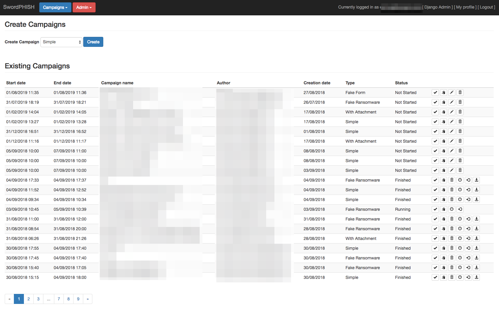

Swordphish
Swordphish is a platform allowing to create and manage fake phishing campaigns.
The goal of Swordphish is to raise awareness of your users regarding phishing easily and in a secure way.
We believe that it's totally utopian to reach the goal of zero click on a phishing campaign, but we believe we can reduce the number of victims and overall increase the number of reporting to security teams by training people using this kind of tool.
Identifying security contacts may be hard in a big structure like ours, that's why we developed Swordphish and a mail client button helping our users to report suspicious mail to security teams just by clicking on a button. No more intranet hunting looking for that security contact, just click and it's done!
This choice seriously improved the visibility on what our users are receiving, and we decided to offer it to the community!
Swordphish can be used to train people identifying suspicious mails, and it can help checking that people report correctly the mails to security teams.
